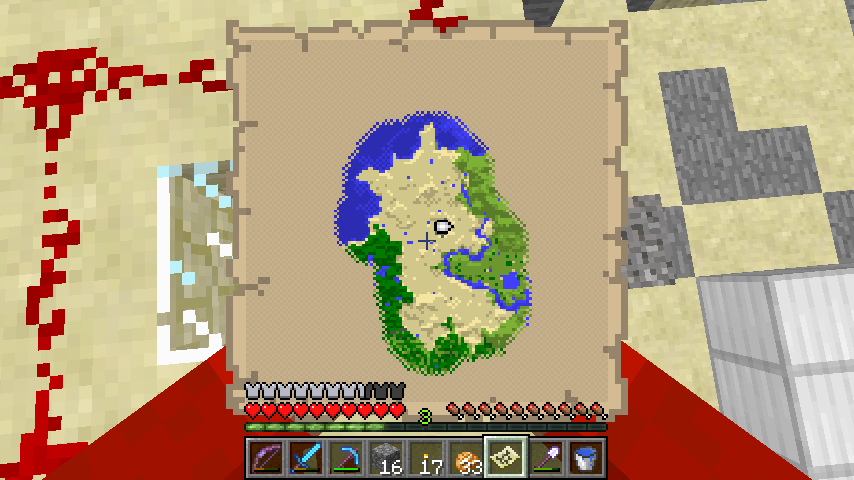

首页
上一页
186
187
188
189
190
191
191
192
193
194
195
196
下一页
末页
defanive2
无尽黑夜
14
回到家，准备各种物资
造中继器一堆
——来自 MCLive
13207楼
2013-03-02 11:50
defanive2
无尽黑夜
14
带上各种物资一堆
准备出发
PS 想了很久，应该没有带漏了
毕竟比较远，跑一次要好几分钟
——来自 MCLive
13209楼
2013-03-02 11:54
defanive2
无尽黑夜
14
远程狙击一只ghast
——来自 MCLive
13212楼
2013-03-02 11:58
defanive2
无尽黑夜
14
收获眼泪和火药 = =
——来自 MCLive
13213楼
2013-03-02 11:58
defanive2
无尽黑夜
14
至于这个机器到底是什么呢
我来公布答案了
——来自 MCLive
13214楼
2013-03-02 12:04
defanive2
无尽黑夜
14
在马克范围的时候
我圈了一块256x256大小的区域
如果有看我的刷怪帖子就知道
刷怪是以玩家为中心的15x15个chunk
这个范围把整个刷怪区域都包围了
——来自 MCLive
13218楼
2013-03-02 12:08
defanive2
无尽黑夜
14
很明显就是一种刷怪塔
刷怪循环里面会进行3种刷怪：怪物，动物，水生物
如果是刷普通怪物的话，无效面积未免太大了，周围都是洞穴
而动物需要在草地上才能刷出，整个区域都是在沙漠中
——来自 MCLive
13220楼
2013-03-02 12:11
defanive2
无尽黑夜
14
因此这个是一个刷章鱼的刷怪塔
PS 如果没记错的话
在本次直播前貌似已经有一个人猜到了
——来自 MCLive
13222楼
2013-03-02 12:14
defanive2
无尽黑夜
14
给活塞上方装上水
PS 其实之前的一些提示如果充分推测也是可以得到的
如果是自己推敲出来的话
那么说明你对MC的了解已经非常不错了
——来自 MCLive
13225楼
2013-03-02 12:20
defanive2
无尽黑夜
14
加上水之后，给天顶做了点透光处理
这样下面就不会刷怪了
——来自 MCLive
13227楼
2013-03-02 12:25
defanive2
无尽黑夜
14
烧点玻璃
——来自 MCLive
13228楼
2013-03-02 12:28
defanive2
无尽黑夜
14
现在打开活塞的话
可以看到一个很巨大的水帘
——来自 MCLive
13230楼
2013-03-02 12:29
defanive2
无尽黑夜
14
之前如果觉得活塞的排列很奇怪的话
其实如果看水源的排列就会觉得十分正常了
当然这个还不是最终的设计
——来自 MCLive
13232楼
2013-03-02 12:30
defanive2
无尽黑夜
14
在每个水源下方空一格放上一个方块
这样水源下流的时候遇到方块就会散开
形成4个水柱，非常高的利用率
PS 其实如果要覆盖尽可能多的区域的话
有更加高效的排列方法
但是使用这个排列是有原因的
——来自 MCLive
13235楼
2013-03-02 12:32
defanive2
无尽黑夜
14
完成放置方块
PS 其实在挖的时候就应该开始放方块了
现在放方块比较麻烦
——来自 MCLive
13240楼
2013-03-02 12:39
defanive2
无尽黑夜
14
给透光口加上玻璃
现在看排列其实是非常简单的
——来自 MCLive
13241楼
2013-03-02 12:42
defanive2
无尽黑夜
14
放水之后，每个水源都形成了4个水柱
这样就覆盖了一半的面积
每个水柱都不相邻
——来自 MCLive
13242楼
2013-03-02 12:43
defanive2
无尽黑夜
14
关水的时候就可以看到效果了
一半的面积都被水柱覆盖
——来自 MCLive
13243楼
2013-03-02 12:44
defanive2
无尽黑夜
14
在做机器的电路部分之前
我们同样用刷怪循环的原理进行提高效率
既然要提高效率，自然就要降低无效面积
而章鱼只能在刷怪范围的y=46至62的区域刷出
因此我们把在(4517,62,-1067)到(4772,46,-811)
内的全部水源都给处理掉就好了
——来自 MCLive
13246楼
2013-03-02 12:48
defanive2
无尽黑夜
14
任务并不算特别繁重
利用地图将全部的湖水都清理掉即可
PS 地下湖一般形成高度都比较低，暂时不需要考虑
PS PS 这也是为什么我选择在沙漠建的原因
水源相对比较少
——来自 MCLive

13247楼
2013-03-02 12:50
defanive2
无尽黑夜
14
清理湖水最方便的方法就是填装之后挖走填装材料
填装材料尽量选择容易破坏的
当然最佳的填装材料就是TNT了
带上几组的TNT，填完之后不需要工具手打就可以回收
非常方便
但是忘记带了。。。
——来自 MCLive
13248楼
2013-03-02 12:55
defanive2
无尽黑夜
14
处理各种湖ing
——来自 MCLive
13251楼
2013-03-02 13:04
defanive2
无尽黑夜
14
对于河流我觉得太蛋疼了
于是决定直接用石头填
——来自 MCLive
13254楼
2013-03-02 13:21
defanive2
无尽黑夜
14
完成一部分
——来自 MCLive
13256楼
2013-03-02 13:28
defanive2
无尽黑夜
14
鹅卵石用尽了，暂时只处理了这么多
目测还需要大约20组左右
其实主要的水源是右侧的河流
其他的沙漠的湖基本上都在y=62以上
——来自 MCLive
13263楼
2013-03-02 13:49
defanive2
无尽黑夜
14
= = 看错了，还有一箱
继续填河
——来自 MCLive
13264楼
2013-03-02 13:50
defanive2
无尽黑夜
14
终于完成了，我擦
应该在这个范围内都没有任何水域了
——来自 MCLive
13269楼
2013-03-02 14:01
defanive2
无尽黑夜
14
布置一下电路
非常简单，一个循环脉冲
信号传送过去然后被缩短
然后供给活塞
——来自 MCLive
13270楼
2013-03-02 14:09
defanive2
无尽黑夜
14
测试的效果就是每隔一段时间，水流就会中断
目的就是把章鱼全部冲下去摔死
——来自 MCLive
13271楼
2013-03-02 14:10
defanive2
无尽黑夜
14
最后加一个总开关
然后一直连到等候点
——来自 MCLive
13273楼
2013-03-02 14:18
首页
上一页
186
187
188
189
190
191
191
192
193
194
195
196
下一页
末页